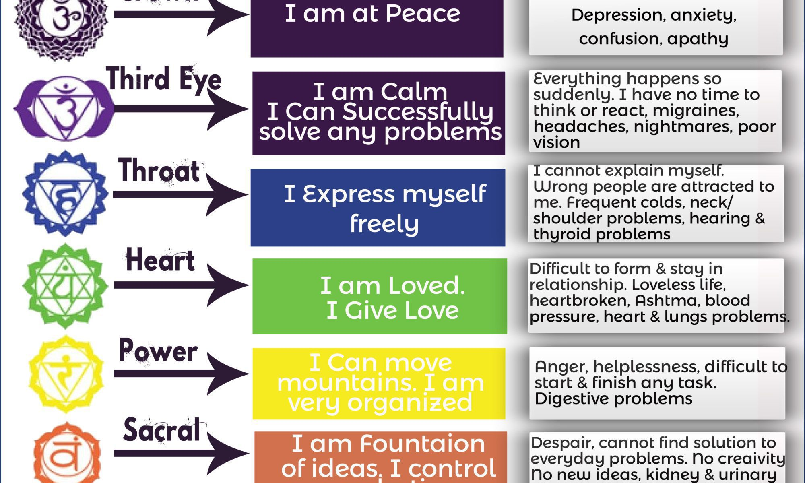
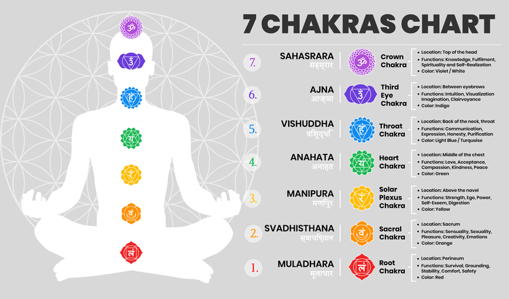
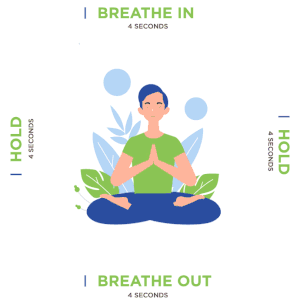

Chakra translates to “wheel”. The 7 chakras in the body are
distinct energy centers that start at the top of your head and end at the bottom
of your spine.
Here’s where each of the chakras is located—and what it’s responsible for—per
...


 Crown chakra:
This swirling crown of energy is linked to your brain, so it’s all about awareness,
intelligence, and spiritual connection.
Feeling forgetful, moody, or just disconnected from your body? A crown chakra meditation
might help.
Crown chakra:
This swirling crown of energy is linked to your brain, so it’s all about awareness,
intelligence, and spiritual connection.
Feeling forgetful, moody, or just disconnected from your body? A crown chakra meditation
might help.
Third eye chakra:
This “third eye” connects to how you see the world. The energy swirling in this part of your
body influences imagination, intuition, and instinct.
Throat chakra:
This chakra swirls with all things creativity and communication.
Of course, sometimes we find ourselves struggling to balance communication skills.
Some good ol’ meditation can bring throat chakra healing.
Heart chakra:
As you’d expect, the heart chakra = all things love and compassion.
But a blocked heart chakra doesn’t always manifest as hatred or bitterness. Sometimes
troubles in the heart-land look more like throwing yourself down like a doormat for others.
Solar plexus chakra:
Y’know how performance anxiety feels like butterflies in your stomach? You can thank your
solar plexus chakra.
When this energy center thrums, it gives off major self-confidence vibes. When it’s blocked,
you prolly feel super down, insecure, or anxious.
Sacral chakra:
This lower-abdominal energy center is connected to your sexuality and creativity. Some folks
find that it’s super influential over self-worth and self-image.
As with other chakras, sacral chakra probs can manifest physically. That means urinary
tract infections (UTIs), libido probs, and lower back pain.
Root chakra:
The literal foundation of your spine, your root chakra represents confidence and stability.
It’s often associated with feeling grounded and secure.
Feeling knocked around by swirling insecurities? Time for a root chakra meditation.

A.Box breathing(Deep Breathing)
To perform a deep breathing chakra meditation, first, find a quiet place where you can be alone.
Sit with your legs crossed at the edge of a meditation cushion or firm pillow. Put your hands on your knees with your
palms facing up. Cast your eyes downward or close them gently.
Start with one deep breath in. Allow your belly to expand outward as you inhale through your nose. Count to four
slowly until your lungs are completely full of air. Hold the air lightly in your lungs for another count of four.
Now, exhale the air out of your mouth to a count of four.
...
to do
Love of life:
Are you experiencing the hardships that come with life? A one week of chakra meditation will make you
love life, feel less stressed, and enjoy each day....
Gives you a positive attitude
Practicing chakra will enable you to visualize things in a more positive way. It will give you the
ability to conquer in bad times and the strength to tackle the challenges you face each day.
Self- healing
Chakra meditation is able to locate the specific place where you are hurting, be it because of betrayal,
heartbreak, or loss of a loved one, and speed up the healing process.
Better relationships
Balanced chakras create peace within you, giving you ways to deal with temper. This enables you to have
compassion towards others and emphasize with them hence loving relationships and better homes.
Gives balance with body and mind
You become more aware of the energy channels in your body through meditation. This leads to more awareness
of the slightest change in your body, even when you are not meditating.
Other benefits include; better sleep, great connection to inner sleep, contentment, peace, and heightened
charges of energy.
“As for meditation, you can perform it daily or weekly, aim for around 20 minutes each time.”
Conclusion
For contentment, positive energy, and self-healing, chakra meditation got you. It does not require a lot
of effort, all you need is a yoga mat, the perfect music, and a dedicated set of amount of time
for meditation.